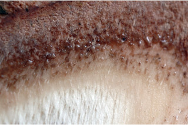
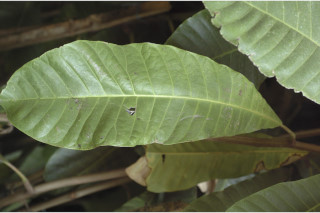
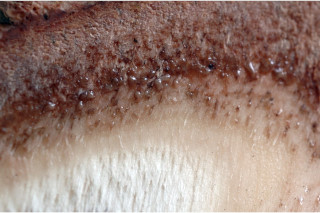
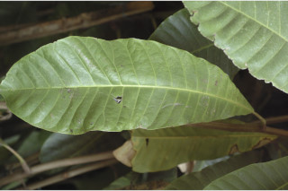
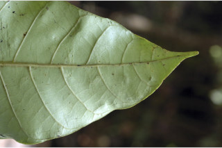
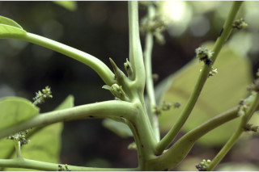
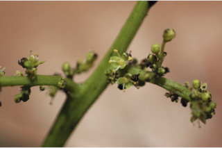
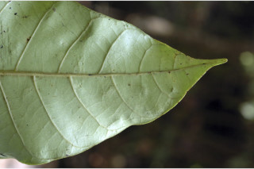
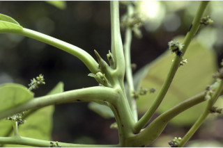
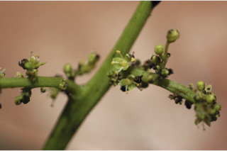

Botanical descriptions:
ಸಸ್ಯದ ವೈಜ್ಞಾನಿಕ ವಿವರ:
Botanical descriptions:
மரங்களின் பண்புகள்:
Habit:
ಪ್ರಕೃತಿ :
Habit:
வளரியல்பு:
Trees, up to 20 m tall
25 ಮೀ ಎತ್ತರದವರೆಗೂ ಬೆಳೆಯುವ ಮರಗಳು.
20 മീറ്റര് വരെ ഉയരത്തില് വളരുന്ന മരങ്ങള്.
மரம், 20 மீ. உயரம் வரை வளரக்கூடியது.
Trunk & Bark:
ಕಾಂಡ ಮತ್ತು ತೊಗಟೆ:
Trunk & Bark:
தண்டு மற்றும் மரப்பட்டை:
Bark smooth, greyish brown, mottled with numerous prominent lenticels; blaze light brown.
ತೊಗಟೆ ನಯವಾಗಿದ್ದು ಕಂದು ಮಿಶ್ರಿತ ಬೂದುಬಣ್ಣ ಹೊಂದಿದ್ದು, ಅನೇಕ ಪ್ರಮುಖವಾಗಿ ಕಾಣುವ ವಾಯು ವಿನಿಮಯ ಬೆಂಡು ರಂಧ್ರಗಳನ್ನೊಳಗೊಂಡಿರುತ್ತವೆ. ಕಚ್ಚುಗಳು ಮಂದವಾದ ಕಂದುಬಣ್ಣ ಹೊಂದಿರುತ್ತದೆ.
പുറംതൊലി മിനുസമാര്ന്നതും, ചാരം കലര്ന്ന തവിട്ട് നിറത്തിലുള്ളതും, ധാരാളം ശ്വസനരന്ധ്രങ്ങള് നിറഞ്ഞതുമാണ്; വെട്ട്പാടിന് ഇളം തവിട്ട് നിറം.
மரத்தின் பட்டை வழுவழுப்பானது, சாம்பல்-அரக்கு நிறம், பட்டையின் மேல் லெண்டிசெல் (பட்டை துளைகள்) பரவலாக காணப்படும், உள்பட்டை வெளிறிய அரக்கு நிறம்.
Branches and Branchlets:
ಕವಲುಗಳು ಮತ್ತು ಕಿರುಕೊಂಬೆಗಳು:
Branches and Branchlets:
கிளைகள் & சிறிய நுனிக்கிளைகள்:
Branchlets stout, smooth, glabrous.
ಕಿರುಕೊಂಬೆಗಳು ದೃಢ ಹಾಗೂ ರೋಮರಹಿತವಾಗಿದ್ದು ನಯವಾದ ಮೇಲ್ಮೈ ಹೊಂದಿರುತ್ತವೆ.
അരോമിലവും ഉരുണ്ടതും ദൃഢവുമായ, മിനുസമാര്ന്ന, ഉപശാഖകള്.
சிறிய நுனிக்கிளைகள் தடித்தது, வழுவழுப்பானது, உரோமங்களற்றது.
Exudates:
ಜಿನುಗು ದ್ರವ:
Exudates:
சாறு:
Latex acrid, watery, turning black after exposure.
ಸಸ್ಯಕ್ಷೀರ ಜಲರೂಪಿಯಾಗಿದ್ದು ಖಾರ ಹಾಗೂ ಕಹಿ ಮಿಶ್ರಿತವಾಗಿರುತ್ತದೆ. ಗಾಳಿಗೆ ಒಡ್ಡಿದ ನಂತರ ಕಪ್ಪುಬಣ್ಣಕ್ಕೆ ತಿರುಗುತ್ತದೆ.
പൊള്ളിക്കുന്ന ജലമയമായ സ്രവം, വായുസമ്പര്ക്കം ഏല്ക്കുന്നതോടെ കറുപ്പായി മാറുന്നു.
சாறு தண்ணீரை போன்றது, கொப்பளங்களை உருவாக்க கூடியது மெதுவாக கருப்பு நிறத்திற்கு மாறிவிடும்.
Leaves:
ಎಲೆಗಳು:
Leaves:
இலைகள்:
Leaves simple, alternate, spiral, petiole 5-10 cm long; lamina (25) 45-100 x (6) 15-22 cm, largely oblong-lanceolate or obovate, apex obtusely and abruptly acuminate, base cuneate and oblique, margin entire and wavy; secondary_nerves ca. 20 pairs; tertiary_nerves reticulate.
ಎಲೆಗಳು ಸರಳವಾಗಿದ್ದು, ಪರ್ಯಾಯ ಸುತ್ತು ಚೋದನಾ ವ್ಯವಸ್ಥೆಯಲ್ಲಿರುತ್ತವೆ. ಎಲೆತೊಟ್ಟುಗಳು 5-10ಸೆ.ಮೀ. ಉದ್ದವಾಗಿರುತ್ತವೆ, ಎಲೆ ಪತ್ರಗಳು (25) 45-100 × (6) 15-22 ಸೆ.ಮೀ. ಗಾತ್ರ ಹೊಂದಿದ್ದು, ಚತುರಸ್ರಾಕಾರ ಈಟಿ ಅಥವಾ ಬುಗುರಿಯಾಕಾರದಲ್ಲಿರುತ್ತವೆ. ಪತ್ರಗಳು ಚೂಪಾಗಿಲ್ಲದ, ಏಕಾಏಕಿಯಾಗಿ ಕ್ರಮೇಣ ಚೂಪಾದ ತುದಿಭಾಗ, ಓರೆಯಾಗಿ ಬೆಣೆಯಾಕಾರದ ಬುಡಭಾಗ ಹಾಗೂ ನಯವಾದ ಅಲೆಯಾಕಾರದ ಅಂಚನ್ನು ಹೊಂದಿರುತ್ತವೆ. ಎರಡನೇ ದರ್ಜೆಯ ನಾಳಗಳು ಸುಮಾರು 20 ಜೋಡಿಗಳಿದ್ದು, ತೃತೀಯ ದರ್ಜೆಯವು ಜಾಲಬಂಧ ನಾಳ ವಿನ್ಯಾಸದಲ್ಲಿರುತ್ತವೆ.
ഇലകള് ലഘുവും, സര്പ്പിളാകൃതിയില് ഏകാന്തരക്രമത്തില് അടുക്കിയതുമാണ്; ഇലഞെട്ടുകള്ക്ക് 5 മുതല് 10 സെ.മീ. വരെ നീളം, പത്രഫലകത്തിന് (25 സെ.മീ) 45 സെ.മീ. മുതല് 100 സെ.മീ. വരെ നീളവും (6 സെ.മീ.) 15 സെ.മീ. മുതല് 22 സെ.മീ. വരെ വീതിയും, വലിയ ആയതാകാര-കുന്താകൃതിയോ, അപ അണ്ഡാകാരമോ ആണ്, മുനപ്പില്ലാതെയും പെട്ടെന്നവസാനിക്കുന്നതുമായ ദീര്ഘാഗ്രത്തോടെയും, പത്രാധാരം ആപ്പ് ആകൃതിയുമാണ്, അരികുകള് അവിഭജിതവും തരംഗിതവുമാണ്; ദ്വിതീയ ഞരമ്പുകള് ഏതാണ്ട് 20 ജോഡി; ജാലികാ വിന്യാസത്തിലുള്ള ത്രിതീയ ഞരമ്പുകള്.
இலைகள் தனித்தவை, மாற்றுஅடுக்கமானவை, சுழல் போன்று அமைந்தவை; இலைக்காம்பு 5-10 செ.மீ.; இலைகள் (25) 45-100 X (6) 15-22 செ.மீ, நீள்சதுர-ஈட்டி வடிவம் அல்லது தலைகீழ் முட்டை வடிவம், அலகின் நுனி சிறிது மழுங்கிய அதிக்கூரியது, அலகின் தளம் ஆப்பு வடிவம் மற்றும் சமச்சீரற்றது, அலகின் விளிம்பு முழுமையானது மற்றும் அலைப்போன்றது; இரண்டாம் நிலை நரம்புகள் பொதுவாக 20 ஜோடிகள்; மூன்றாம் நிலை நரம்புகள் வலைபின்னல் அமைப்பு கொண்டது.
Inflorescence / Flower:
ಪುಷ್ಪಮಂಜರಿ/ಹೂಗಳು:
Inflorescence / Flower:
மஞ்சரி / மலர்கள்:
Inflorescence axillary panicles with unisexual greenish flowers; male inflorescence 30-50 cm long; female inflorescence 5-15 cm long, minutely rusty pubescent.
ಪುಷ್ಪಮಂಜರಿ ಪುನರಾವೃತ್ತಿಯಾಗಿ ಕವಲೊಡೆಯುವ, ಅಕ್ಷಾಕಂಕುಳಿನಲ್ಲಿರುವ ಮಾದರಿಯಾಗಿದ್ದು ಏಕಲಿಂಗಿಗಳಾದ ಹಾಗೂ ಹಸಿರು ಬಣ್ಣದ ಹೂಗಳನ್ನೊಳಗೊಂಡಿರುತ್ತದೆ. ಗಂಡು ಹೂಗಳನ್ನುಳ್ಳ ಪುಷ್ಪಮಂಜರಿ 30 ರಿಂದ 50 ಸೆಂ.ಮೀ. ಉದ್ದವಿರುತ್ತದೆ. ಹೆಣ್ಣು ಹೂಗಳನ್ನುಳ್ಳ ಪುಷ್ಪಮಂಜರಿ 5 ರಿಂದ 15 ಸೆಂ.ಮೀ. ಉದ್ದವಿದ್ದು, ಕಿಲುಬು ಬಣ್ಣದ, ಸೂಕ್ಷ್ಮವಾದ ಮೃದು ತುಪ್ಪಳದಿಂದ ಆವೃತವಾಗಿರುತ್ತದೆ.
കക്ഷങ്ങളിലുണ്ടാകുന്ന, പച്ച നിറത്തിലുള്ള ഏകലിംഗ പുഷ്പങ്ങളോടുകൂടിയ പാനിക്കിള് പൂങ്കുലകള്; ആണ് പൂങ്കുലകള്ക്ക് 30 മുതല് 50 സെ.മീ. വരെ നീളം; പെണ് പൂങ്കുലകള്ക്ക് 5 മുതല് 15 സെ.മീ. വരെ നീളം; നനുത്ത തുരുമ്പന് രോമിലമായതാണ്.
மஞ்சரி தண்டின் இலைக்கோணங்களில் காணப்படும் பேனிக்கிள் மற்றும் பச்சை நிறமுடையது; ஒர்பாலானவை மலர்கள், ஆண்மஞ்சரி 30-50 செ.மீ. நீளமானது; பெண்மஞ்சரி 5-15 செ.மீ. நீளமானது, சிறிய பொன் நிறமான அரக்கு உரோமங்களுடையது.
Fruit and Seed:
ಕಾಯಿ /ಬೀಜ:
Fruit and Seed:
கனி / விதை:
Drupe, compressed, obliquely reniform ca. 2 cm, 1-seeded.
ಕಾಯಿಗಳು 3 ಸೆಂ.ಮೀ. ಗಾತ್ರದವು ಹಾಗೂ ಒಂದು ಬೀಜವನ್ನೊಳಗೊಂಡಿರುವಂತಹವು, ಓರೆಯಾದ ಮೂತ್ರಪಿಂಡದ ಆಕಾರ ಹೊಂದಿದ್ದು ಚಪ್ಪಟೆಯಾಗಿರುತ್ತವೆ.
കായ, ഏതാണ്ട് 2 സെ.മീ. നീളവും ഒറ്റ വിത്തുമുള്ള, പരന്നതും, ചരിഞ്ഞ വൃത്താകാരവുള്ള അഭ്രകം.
உள்ளோட்டுத்தசைகனி (ட்ரூப்), தட்டையானது, சமச்சீரற்ற சிறுநீரக வடிவம், 2 செ.மீ., நீளமானது, ஒரு விதையுடன் காணப்படும்.

 




 




